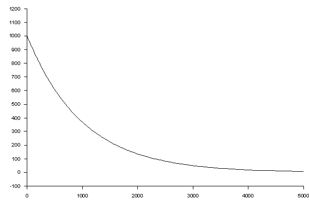
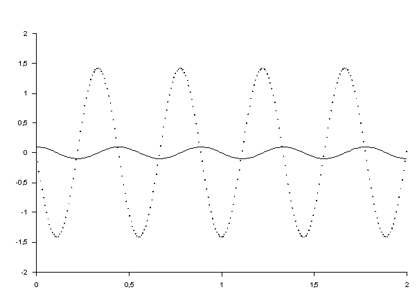
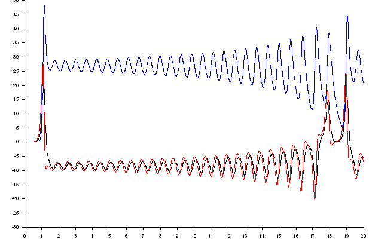
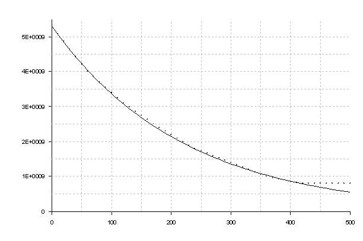

Minigraf er et program til løsning af differentialligninger. Det kan løse 1. og højere ordens ligninger. Det kan løse koblede ligninger og det kan tegne grafer.
Det er velegnet til emnet differentialligninger og som værktøj til SRP opgaver i 3.g Programmet er freeware. Det er udarbejdet af Palle Skaarup, Frederikssund Gymnasium.
Eksempler på opgaver:
Eksempel 1: Radioaktivt henfald
Dette er et simpelt eksempel på en første ordens differentialligning. Programmet består af 3 dele: Konstanter, DifferentialLigninger og GrafVariable. Bemærk, at <1000> er startværdi.

Eksempel 2: Hookes lov
Dette er et eksempel på en 2. ordens ligning. Denne opdeles i 2 førsteordensligninger.
Bemærk, at teksten mellem (* note *) ikke er en del af programmet. Der tegnes 2 grafer. Den ene som linie (type L1 til L3), den anden som mærke (type M1 til M6)

Eksempel 3: Lorenz ligningerne
Dette er dels et eksempel på koblede differentialligninger og så er det det klassiske eksempel på kaos, idet en lille ændring i startbetingelser giver en voldsom ændring i løsningerne.

Eksempel 4, Barium 137
En simpel første ordens differentialligning. Målte tabelværdier er angivet som en tabel, ved navn. Maling. En funktion y er defineret ud fra tabellen. Denne funktion er så tegnet sammen med den numeriske løsning. Funktionen interpolerer (og ekstrapolerer) i tabellen.
